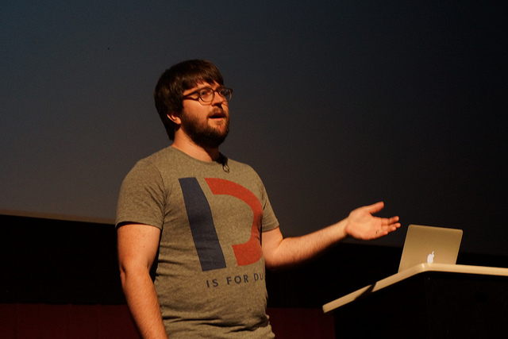
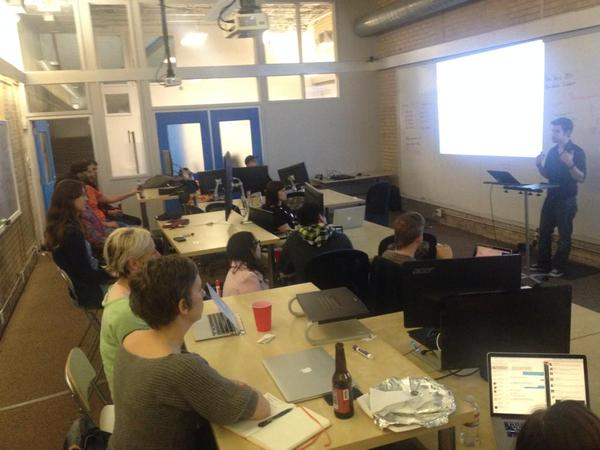
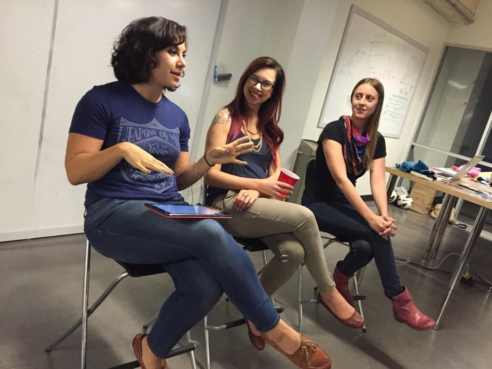
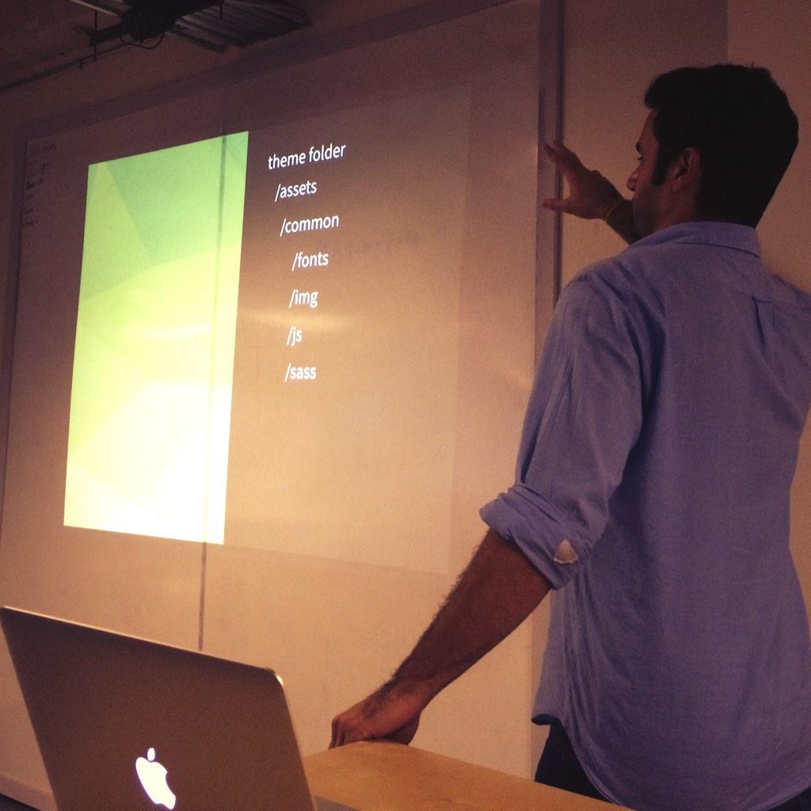
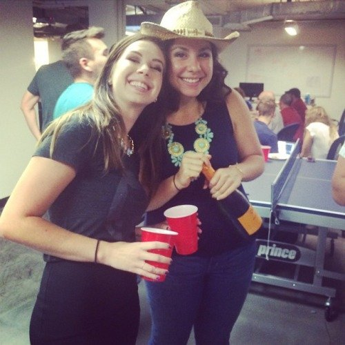

- Responsive Web Design gets a bad rap for performance. Dave investigates and busts some myths. » Register Here
- Singularity lets you toss out your old, stodgy grid system and create a system of columns and gutters that actually works with your content, allowing different layouts at different breakpoints, a visual order that isn't tied to your source order, and no more terrible class names.
- We're hosting a panel of attendees and speakers of both CSSDevConf and SassConf to recap whats new and share resources!
- Flip's talk will cover (mostly) platform agnostic tooling for writing better Sass. Eddie discusses how one Wordpress theme is used across four domains.
- For the first-ever ATXSass meetup, we'll start simple — with an overview. Elyse walks you through the most common Sass features and explain why preprocessors are valuable to the pure CSS fan.